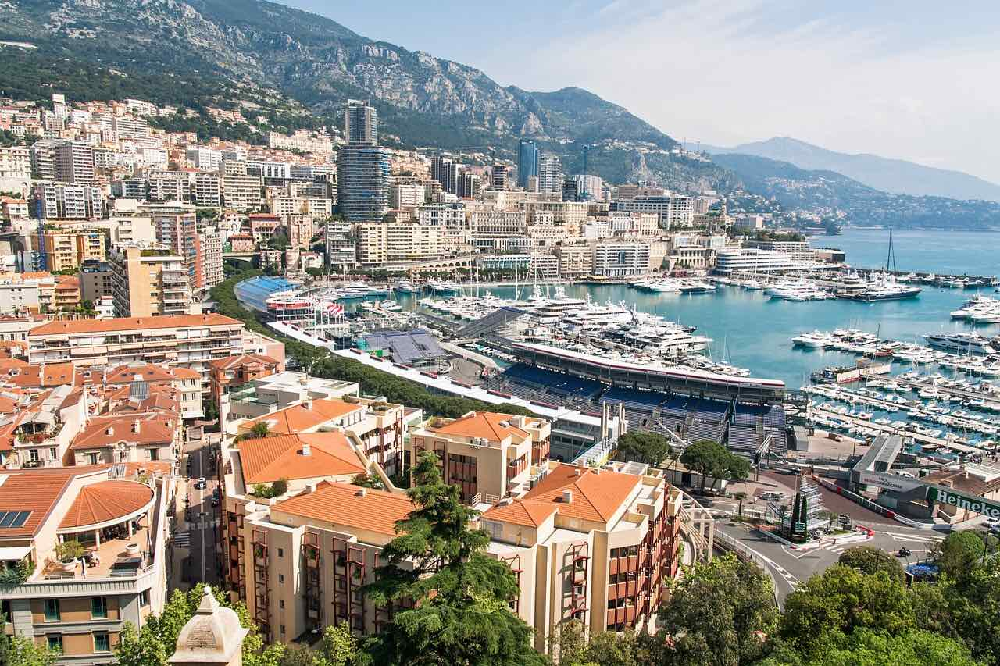

El Valle del Loira en Francia es un destino ideal para unas vacaciones en familia
con una amplia variedad de actividades para niños y adultos.
Los niños pueden descubrir la vida en el campo con una granja mini en el Castillo de Villesavin
aprender juegos y artesanías medievales en el Castillo de Meung-sur-Loire y la Fortaleza de Montbazon
o seguir los pasos de Tintin en el Castillo de Cheverny. Las familias también pueden disfrutar de diversas actividades acuáticas
visitar el Parque de Mini-Castillos de Amboise, o dar un paseo en el valle de las cuevas de Goupillières.
Últimas Publicaciones
Explorando París: La Ciudad del Amor

Descubre la magia de París, la ciudad del amor, con sus icónicos monumentos como la Torre Eiffel, el Arco del Triunfo y la Catedral de Notre-Dame. Además, disfruta de su exquisita gastronomía y su vibrante vida nocturna.
La Provenza: Campos de Lavanda y Pueblos Encantadores

Pierdete en los hermosos campos de lavanda de la Provenza y visita sus encantadores pueblos como Aix-en-Provence y Avignon. No te pierdas la oportunidad de probar su delicioso vino y aceite de oliva.
La Costa Azul: Lujo y Glamour en la Riviera Francesa
Vive el lujo y el glamour en la Riviera Francesa, con sus playas de ensueño, yates lujosos y ciudades elegantes como Cannes, Niza y Mónaco. Disfruta de sus exclusivos restaurantes y boutiques de diseñador.